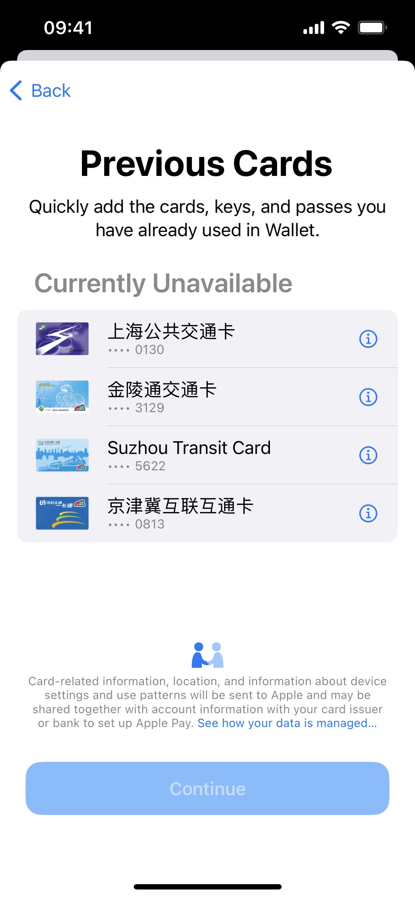
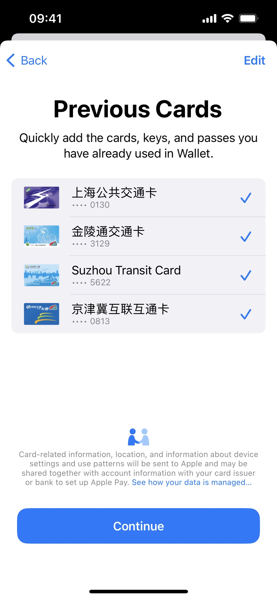

@王瑞青
事情始于：2021 圣诞节，本人给俺妹买 iPhone 13 的过程中。
没忍住，给自己也买了个，用的是以旧换新的方法（旧手机是 iPhone 11 Pro 256G，抵了 3200 元，还行）。以旧换新，旧手机需要回收，所以要现场转移数据（店员也没问有没有备份啥的）。把手机交给店员，开启转移流程后，俺就去看电影了。
看完电影回来，我拿了新手机直接回家了（没有迁移微信资料，因为用不着，但是此处依然谩骂张小龙）。
回家后，我才发现卡没转移过来，公交卡和银行卡都没有转移过来。
在手动转移银行卡（会收到银行验证短信，无需手动输入）过程后，我发现公交卡无法添加：

上网查了查，从网页版 iCloud 里移除了卡片和设备，可惜没用。
咨询 Apple Store 店员，提醒我等待个几天（我开启了钱包的 iCloud，所以有列表，也许过几天就好了）。那我就等吧。
第二天，我尝试添加，竟然可以了（高兴得太早了）。

(注意上图没有金额) 但是当我我添加了第一张卡后，无法继续添加。过一会后，我的第一张卡也提示无法使用。
。。。
WTF？？？
那我只好去店里，和店员反应问题。
在了解到我有备份文件的情况下，先尝试了使用店内的机器恢复备份：
- 先把我的虚拟机移动到移动硬盘里（俺没空间了）
- 把我移动硬盘里打包好的备份文件（那么多文件，移动太慢，而且占空间），复制到 mac 上，解压到备份的路径
- 恢复备份，但是失败啦！
我们猜测和机器的标识码有关。于是决定，撤销以旧换新，召回机器。过程如下
- 关闭 iPhone 13 的 Find My，然后取消交易（时间没到一周）
- 再买下此 iPhone 13，继续带走使用（没想到吧，退货的机器，竟然可以直接购买）
1 月 2 日，店里打电话给我，机子召回了，让我去取货。。。
那就 Go Go Go，先恢复看看行不行吧。
恢复后，我的 iPhone 11 并没有显示一张卡，应该是 iCloud Update 的过程中发现我已经远端移除了。但是还好，卡都可以添加了。
我打开 iPhone 13 的钱包，把卡都添加回来了（注意此处有余额），添加过程无短信，直接添加。
Bingo！
然后就把俺的手机退掉。。。
再重新走一遍以旧换新的流程。
结论
iCloud bug 很多嘛
- 转移卡，先要移除这个逻辑很坑爹啊
- 我明明已经在 iCloud 里移除卡了
- 我恢复到 iPhone 11 的时候，其实也不算是移除操作，系统是怎么判断的？？？
- 万一手机被回收了，咋办？
- 通过公交公司退款，再买一张卡存入
- 但是这四张卡岂不是会一直残留着？